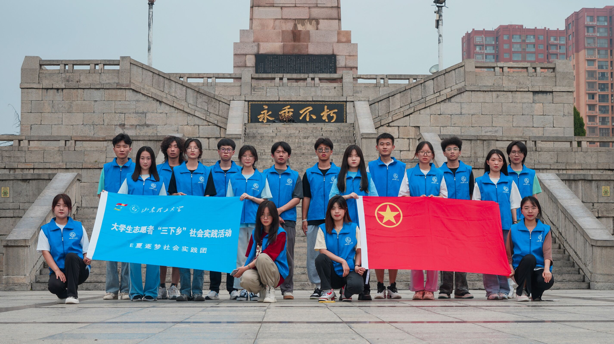

缅怀先烈之英灵，献白菊以寄情思——E夏逐梦实践团赴单县湖西革命烈士陵园献花哀悼
微风徐徐，诉不尽对革命烈士的无限深情；松柏青春，道不尽对烈士英魂的无尽哀思。青山苍柏埋忠骨，山河无恙，缅怀先烈。7月18日，E夏逐梦实践团踏入这个红色革命圣地，阅读湖西区军民团结一心，可歌可泣的英雄诗篇。
陵园主要有湖西革命烈士纪念塔、英雄阁、浩然亭、抗日战争纪念亭、吴大名烈士墓、李贞乾烈士墓、烈士公墓、纪念广场等二十余处重点烈士纪念建筑物，以千年古堤为轴线，恢复建设了琴台、晒仙台、天台、二贤祠、俊亭秀廊等文化景点，让“鸣琴而治”“披星戴月”“吕洞宾游单父”等传说场景重现时间，展现了单县的历史底蕴和文化内涵。青山绿水间，安葬着2649名革命烈士。
湖西革命烈士纪念塔上“湖西革命烈士纪念塔”九个镏金大字在阳光下熠熠生辉，让人悠然而生敬意。纪念塔平台正面镌刻“永垂不朽”，背面刻有“浩气长存”。
实践团成员每人都手持一束白菊花，步行前往纪念碑平台上为革命烈士献花以表示告慰，亲身体会烈士们过草地涉险滩的艰苦奋斗精神，聆听英雄事迹，赓续革命精神，让红色记忆在祖国的新鲜血液中生根发芽。颤抖的双手表达敬畏，沉重的神情表示敬意。在场的成员们重温了这高大石碑下伟大灵魂的热血报国故事，追忆了革命先辈艰苦奋斗的革命历程，感受到老一辈革命家坚定共产主义信念、爱党爱国的深厚情怀。
如今，湖西革命烈士陵园里，绿草如茵、楼台林立，苍松翠柏彰显出革命先辈的英勇气概，五颜六色的鲜花点缀其中，湖西老区人民深深地缅怀和尊重这位伟大的英雄。回想过去那些峥嵘岁月，实践团表示，要向革命先烈表示崇高的敬意，要永远怀念他们、牢记他们、传承好他们的红色基因，砥砺前行。
